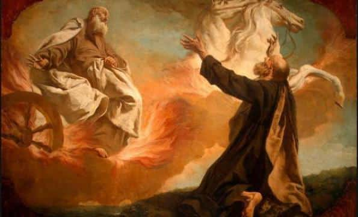

|

|
Духовной жаждою томим,
В пустыне мрачной я влачился, —
И шестикрылый серафим
На перепутье мне явился.
Перстами легкими как сон
Моих зениц коснулся он.
Отверзлись вещие зеницы,
Как у испуганной орлицы.
Моих ушей коснулся он, —
И их наполнил шум и звон:
И внял я неба содроганье,
И горний ангелов полет,
И гад морских подводный ход,
И дольней лозы прозябанье.
И он к устам моим приник,
И вырвал грешный мой язык,
И празднословный и лукавый,
И жало мудрыя змеи
В уста замершие мои
Вложил десницею кровавой.
И он мне грудь рассек мечом,
И сердце трепетное вынул,
И угль, пылающий огнем,
Во грудь отверстую водвинул.
Как труп в пустыне я лежал,
И бога глас ко мне воззвал:
«Восстань, пророк, и виждь, и внемли,
Исполнись волею моей,
И, обходя моря и земли,
Глаголом жги сердца людей».
1826 год
|